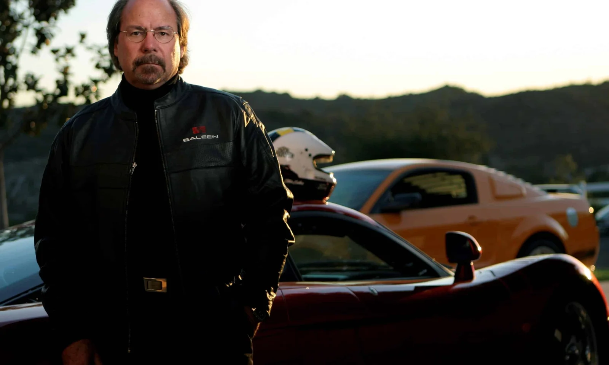

Saleen
Who We Are?
About Saleen:
About Saleen:

Founded in 1984 by legendary racer and visionary Steve Saleen, Saleen Automotive is one of America’s premier specialty manufacturers of high-performance vehicles. With a legacy rooted in racing and innovation, Saleen has pushed the limits of design, engineering, and speed—creating some of the most iconic performance cars in the world.
Steve Saleen
From its earliest days, Saleen set out to transform the ordinary into the extraordinary. What began with tuned and track-ready Mustangs quickly evolved into a full lineup of enhanced Ford models, race cars, and fully proprietary vehicles like the Saleen S7—America’s first production supercar. Handcrafted in California, every Saleen vehicle blends raw power with refined aerodynamics and street-smart style.
Saleen is more than just a car company—it’s a culture of speed, precision, and performance. The brand’s racing pedigree includes numerous championships across SCCA, IMSA, and World Challenge series, with Steve Saleen himself behind the wheel for many of those victories. Each Saleen product reflects this motorsports DNA, delivering performance that’s proven on the track and thrilling on the street.
In addition to complete vehicles, Saleen also offers performance parts, custom styling upgrades, and track support. From the iconic Saleen Mustang to the revolutionary S1 sports car, the company continues to redefine what’s possible in American performance engineering.
With a dedicated fan base, active motorsports involvement, and a relentless pursuit of automotive excellence, Saleen Automotive remains a symbol of speed, style, and American ingenuity.
His entrepreneurial vision pioneered a new industry: specialty design, engineering, manufacturing, and nationwide showroom sales of high-performance vehicles. Saleen’s factory teams—often featuring Steve himself behind the wheel—captured numerous national titles, including the 1987 World Challenge and the 1992 SCCA Truck Championship. By forging unprecedented vendor collaborations, he seamlessly translated championship-grade parts into street-legal packages.
Globally recognized for his expertise in bespoke vehicle production, certification processes, and scalable customization, Saleen caught Ford’s attention in 2002. He was tapped to engineer, develop, and assemble the legendary Ford GT40. From its humble beginnings, Saleen Automotive has grown into a network of manufacturing plants and distribution centers across North America. Landmark models—from the Saleen Mustang S281 and S351 to the world-class Saleen S7 supercar—have proven victorious on premier circuits from Daytona and Le Mans to Silverstone, Monza, and the Nürburgring.
Beyond his own marque, Steve’s team has contributed to the Dodge Viper’s paint and sub-assembly, created a supercharged Harley-Davidson Ford F-150, and built the first running Camaro for the “Transformers” film. Saleen vehicles have also starred in “Fast & Furious,” “Bruce Almighty,” “Transformers” (as Barricade), and “Iron Man.” Most recently, he launched the Saleen 1—a mid-engine sports car with unmistakable supercar credentials. As featured on the History Channel, Steve Saleen stands alongside Enzo Ferrari and Ferdinand Porsche as one of the few “legendary” performance car builders.
A USC business graduate, Steve lives in Southern California with his wife Liz, their three children, and seven grandchildren.
Unofficial Website Made by Eriksander Pereira da Silva.
See More About Steve Saleen
Home